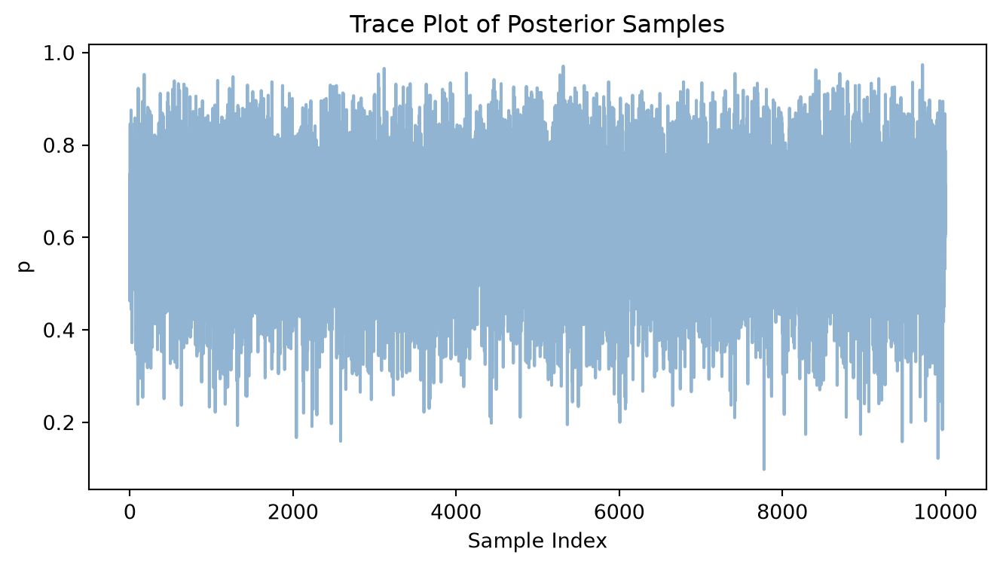
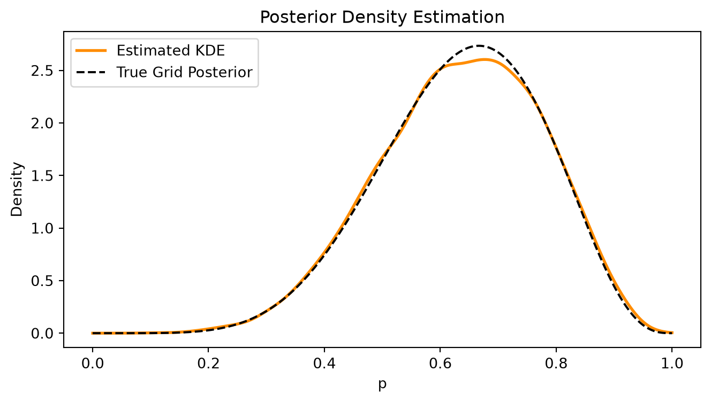
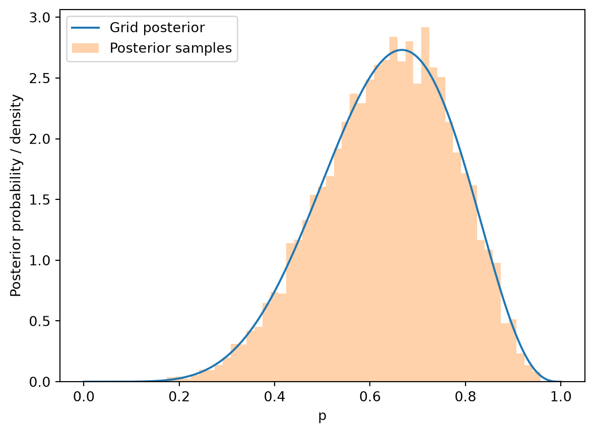

import numpy as np
from scipy.stats import binom, gaussian_kde
#Define grid, prior, and likelihood
p_grid = np.linspace(0, 1, 1000)
prior = np.ones(1000)
likelihood = binom.pmf(k=6, n=9, p=p_grid)
#Calculate and normalize posterior
posterior = likelihood * prior
posterior = posterior / np.sum(posterior)Chapter 3
Chapter 3 is focused on sampling as vehicle for using the posterior distribution to make inferences about the parameters of a model. The posterior distribution is a probability distribution that represents our beliefs about the parameters of a model after observing data. Remember that we generate the posterior by combining the prior distribution and the likelihood of the observed data.
As stated in the book, working with samples allows us to both side-step the need for integral calculus (assuming we can calculate an analytical solution at all) and that much of the modern methods used for computing the posterior distribution only produce samples themselves.
3.1
Here is the posterior for the globe tossing example from chapter 2, computed using the grid approximation method:
We can draw 10,000 samples from the posterior distribution using the np.random.choice() function, which allows us to sample from a discrete distribution defined by the posterior probabilities.
samples = np.random.choice(p_grid, size=10000, replace=True, p=posterior)Plotting the samples gives us:
import matplotlib.pyplot as plt
plt.figure(figsize=(8, 4))
plt.plot(samples, alpha=0.6, color='steelblue')
plt.title("Trace Plot of Posterior Samples")
plt.xlabel("Sample Index")
plt.ylabel("p")
plt.show()
To see the shape of our estimated posterior distribution, we can use a kernel density estimate (KDE) to visualize the distribution of the samples:
def estimate_posterior_density(samples, grid=None):
"""
Estimates the density of posterior samples using Gaussian KDE.
Parameters:
- samples (array-like): Posterior samples drawn from the distribution.
- grid (array-like, optional): Points where density should be evaluated.
Defaults to 1000 points between 0 and 1.
Returns:
- grid (np.ndarray): Evaluation points.
- density (np.ndarray): Estimated probability density at each grid point.
"""
if grid is None:
grid = np.linspace(0, 1, 1000)
kde = gaussian_kde(samples)
density = kde(grid)
return grid, density
grid_points, density_est = estimate_posterior_density(samples)
# Plotting the estimated density
plt.figure(figsize=(8, 4))
plt.plot(grid_points, density_est, color='darkorange', lw=2, label='Estimated KDE')
# Compare with the analytical posterior
plt.plot(p_grid, posterior * len(p_grid), color='black', ls='--', label='True Grid Posterior')
plt.title("Posterior Density Estimation")
plt.xlabel("p")
plt.ylabel("Density")
plt.legend()
plt.show()
Solutions to End of Chapter Exercises:
Easy
A Python version of the code in the text is:
import numpy as np
from scipy.stats import binom
# Construct a grid of 1000 possible values for p
p_grid = np.linspace(0, 1, 1000)
# Uniform prior
prior = np.ones(1000)
# Binomial likelihood: 6 successes in 9 trials
likelihood = binom.pmf(6, n=9, p=p_grid)
# Calculate and normalize the posterior
posterior = likelihood * prior
posterior = posterior / posterior.sum()
# Draw 10,000 samples from the posterior
rng = np.random.default_rng(100)
samples = rng.choice(
p_grid,
size=10_000,
replace=True,
p=posterior
)
With two helper functions to make calculating the questions involving intervals easier:
def percentile_interval(samples, probability):
"""
Return an equal-tailed posterior interval
containing the specified probability.
"""
tail = (1 - probability) / 2
return tuple(
np.quantile(samples, [tail, 1 - tail])
)
def hdi(samples, probability):
"""
Return the narrowest interval containing
at least the specified fraction of samples.
This is a sample-based approximation of
the highest density interval (HDI).
"""
ordered = np.sort(np.asarray(samples))
n = len(ordered)
k = int(np.ceil(probability * n))
# All candidate intervals containing k samples
lower = ordered[:n - k + 1]
upper = ordered[k - 1:]
# Find the narrowest
widths = upper - lower
i = np.argmin(widths)
return (lower[i], upper[i])
An overview of the functions / methods we can use is:
| Operation | Purpose | ||
|---|---|---|---|
np.mean(...) |
Calculate the proportion of samples satisfying a condition | ||
np.quantile(samples, q) |
Find a posterior quantile | ||
hdi(samples, 0.50) |
Find the narrowest 50% interval | ||
percentile_interval(samples, 0.50) |
Find the equal-tailed 50% interval |
3E1
Click to show answer
What we want is P(p<0.2\mid W=6).
Since our samples are drawn from the posterior, we can estimate this probability by calculating the fraction of samples satisfying p<0.2:
print(np.mean(samples < 0.2))0.0013The code above computes \widehat{P}(p<0.2\mid W=6) =\frac{1}{10000} \sum_{i=1}^{10000}\mathbf{1}(p_i<0.2)
where \mathbf{1} is the indicator function.
Note that we never needed to derive or integrate the posterior density. We estimate the desired probability just by counting samples.
3E2
Click to show answer
print(np.mean(samples > 0.8))0.11553E3
Click to show answer
We have a few ways to approach this problem. Two solutions are using complements:
print(1 - np.mean(samples > 0.8) - np.mean(samples < 0.2))0.8832Or using a compound expression:
print(np.mean((0.2 <= samples) & (samples <= 0.8)))0.88323E4
Click to show answer
print(np.quantile(samples, .20))0.51751751751751753E5
Click to show answer
print(np.quantile(samples, (1-0.2)))0.75775775775775783E6
Click to show answer
Since this is the narrowest interval, it has the highest density.
print(hdi(samples, 0.66))(np.float64(0.5225225225225225), np.float64(0.7907907907907907))3E7
Click to show answer
print(percentile_interval(samples, 0.66))(np.float64(0.4994994994994995), np.float64(0.7717717717717718))Note that the intervals for questions 6 and 7 have different widths with the HDI width being slightly narrower (as expected).
As the posterior distribution is fairly symmetric, there is not a large difference between the two. We can plot the posterior to see this:
import matplotlib.pyplot as plt
plt.plot(p_grid, (posterior / (p_grid[1] - p_grid[0])), label="Grid posterior")
plt.hist(
samples,
bins=50,
density=True,
alpha=0.35,
label="Posterior samples"
)
plt.xlabel("p")
plt.ylabel("Posterior probability / density")
plt.legend()
plt.show()